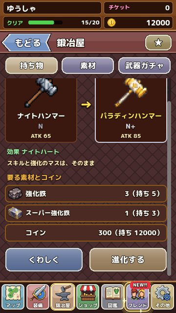
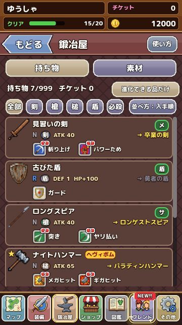

鍛冶屋の使い方：強化と進化
強化のスロットと素材の選び方、進化に必要な素材とコイン、世界をまたぐ進化の鎖まで、鍛冶屋のすべてをまとめました。 更新：2026-11-23
鍛冶屋の画面の流れ
鍛冶屋は、地図の下の欄にある鍛冶屋のボタンから開きます。ゲームを始めたばかりのアーケディア城にいる間は灰色で押せず、平原の村に初めて着いたときにボタンが光って「NEW!!」の印が出ます。最初に開いたときは強化の、品の進化の画面を初めて開いたときは進化の使い方の案内が出ます。あとから見直したいときは、上の帯の右の「使い方」を押してください。
画面の上には「持ち物」と「素材」の 2 つの札があります。持ち物の札で品をタップすると、その品の画面に変わり、そこに「強化」「進化」「売る」の 3 つのボタンが並びます。品の画面には、強化のスロットの星、特殊効果、そして「この武器 1 本で出せる必殺技」も書かれているので、育てる前の確認にも使えます。品の一覧で品を長く押すと ★（お気に入り）を付け外しできます。★ の付いた品と装備している品は、売ることも強化の材料にすることもできません。

強化：スロットを埋めて少しずつ強くする
武器と盾には、手に入れたときに「強化のスロット」の数が決まります。数はレア度ごとの範囲から決まるので、同じ名前の武器でも 1 本ずつちがいます。
| レア度 | スロットの数 |
|---|---|
| N・N+ | 0〜4 |
| R・R+ | 2〜6 |
| SR・SR+ | 4〜9 |
| SSR・SSR+ | 6〜9 |
| UR から上 | はじめから 9 |
強化では、素材か持ち物の品を 1 つ使って、空いているスロットを左から 1 マスずつ埋めます。結果は 4 段階です。
- 失敗：マスは埋まらず、使った素材だけがなくなります
- 成功：+1（黄色の星）
- 大成功：+2（緑の星）
- 奇跡：+3（虹の星）
はじめから持っている見習いの剣はスロットが 0 なので、強化はできません。最初に強化を試すなら、平原の村あたりで手に入る、スロットの多い N や R の武器がちょうどよい練習台になります。強化の材料にした装備はなくなるので、材料を選ぶ画面では種類や「必殺」の札で絞りこみ、残したい品を間違えて選ばないようにしましょう。
武器は「+」の合計だけ ATK が上がり、盾は +1 につき最大 HP が 10 増えます。名前の後ろの「+N」は埋まったマスの数です。スロット 9 マスを全部奇跡で埋めれば +27 になり、武器なら ATK が 27、盾なら最大 HP が 270 も増えます。
何を使って強化するか
強化に使うものによって、結果の出やすさが変わります。画面に出る説明は次のとおりです。
| 使うもの | 結果の出やすさ |
|---|---|
| 強化鉄 | ふつうの強化 |
| スーパー強化鉄 | 失敗しにくく、大成功も出やすい |
| ハイパー強化鉄 | 大成功がとても出やすい |
| ミラクルベル | 必ず奇跡（虹の星） |
| 強化する品と同じ特殊効果の品 | 奇跡が出やすい |
| そのほかの品 | まれに奇跡 |
いらなくなった装備も、売る代わりに強化の材料にできます。とくに「同じ特殊効果の品」は奇跡が出やすいので、たとえば炎の共鳴の武器を育てたいなら、ほかの炎の共鳴の武器をとっておくと役に立ちます。ミラクルベルはボスやラッキーキャラがごくまれに落とすだけのとても貴重な品なので、スロットの多い、長く使う装備に使いましょう。
強化のマスが足りないときは「フエルスロット」でマスを 1 つ増やせます（9 マスまで）。フエルスロットは店では売っておらず、砂漠のオアシスから先のボス・中ボス・ラッキーキャラがまれに落とします。埋めたマスをやり直したいときは「スロットリセット」で 1 マス分の強化を消せます（マスの数は減りません）。スロットリセットは港町ポトスから先の店の「道具」で、500 コインで買えます。

進化：ひとつ上のレア度の品に変える
進化は、素材とコインを使って、品をひとつ上のレア度の別の品に変えることです。N なら N+ へ、R+ なら SR へ、と 1 段ずつ上がり、名前も絵も変わります。進化しても武器の種類・スキル・強化のスロットと埋めた星はそのままなので、強化してから進化しても損はありません。進化した品は図鑑でも「手に入れた」に数えられます。
地上の品を進化させるのに要る素材とコインは、進化する前のレア度で決まります。
| 進化する前 | 要る素材 | コイン |
|---|---|---|
| N | 強化鉄 3・スーパー強化鉄 1 | 300 |
| N+・R | スーパー強化鉄 2・竜のツメ 2 | 1,500 |
| R+ | スーパー強化鉄 3・竜のツメ 3・竜の剛爪 1 | 4,000 |
| SR・SR+ | スーパー強化鉄 3・竜の剛爪 3 | 10,000 |
竜のツメと剛爪は、進化したあとの品の属性のもの（炎竜・水竜・樹竜・光竜・闇竜）を使います。無属性の武器はツメの代わりにスーパー強化鉄、剛爪の代わりにハイパー強化鉄を使います。盾は盾ごとに使う竜の属性が決まっていて、N の盾は強化鉄とスーパー強化鉄だけで進化できます。
地底から先の世界の品は、その世界の素材で進化します。たとえば地底の SSR の武器を SSR+ にするには地底石 10・魔晶石 3・ハイパー強化鉄 2・30,000 コイン、海底の USR+ の武器を LR にするには人魚の涙 10・海神鋼 5・1,600,000 コインが必要です。天空の LSR+ から MR への進化は、天使の羽根 10・オリハルコン 5・2,000,000 コインと、ゲームの中でもいちばん重い進化のひとつです。

進化の鎖の例
どこまで進化できるかは品によってちがいます。N から N+ で止まる品もあれば、何段も育つ品もあります。いくつか例を見てみましょう。
- 竜剣の鎖：ドラゴンスレイヤー（R・ATK 80）→ 竜剣ドラゴルム（R+・100）→ 竜剣ドラゴード（SR・125）→ 竜剣ドラグルド（SR+・160）→ 竜剣ドラ・ド・ラド（SSR・195）→ 竜剣ドラガイア（SSR+・245）→ 覇竜ドラゴライズ（UR・300）。どの段もドラゴンに強いドラキラーを持ち、UR ではドラゴンに威力 200% の「ドラキラー・極」になります
- 雷の槌の鎖：雷鎚ミョルニルス（SR+・ATK 190）→ 鳴雷槌イカヅチ（SSR・210）→ 轟雷槌トニトルス（SSR+・255）→ 昇天槌アセンション（UR・310）→ 雲纏槌キュムラス（UR+・365）→ 雲の大槌（USR・450）→ 積乱雲の大槌（USR+・530）→ 雷槌サンダーヘッド（LR・685）→ 雷神槌ブロンテス（LR+・730）。地上の槌が、天空の LR+ まで育ちます
- はじめの剣：見習いの剣（N・ATK 40）→ 卒業の剣（N+・60）→ ポテムシャール（SR+・170）。最後の段だけ特別に 2 段とびます
雷の槌の鎖のように、世界をまたぐ「つなぎ」の進化は、その先の世界に行けるようになってから進化先が開きます。地上の SR+ で止まっていた品の進化ボタンが、地底に着いたとたんに押せるようになることがあるので、新しい世界に行ったら手持ちの SR+ を見直してみてください。持ち物の札の「進化できる品だけ」を押すと、今進化できる品だけを一覧にできます。

素材が足りないときは
進化の画面では、要る素材の数が色で分かれます。白は持っている素材、オレンジは手持ちの下の素材から作れる素材、赤は作っても足りない素材です。オレンジの素材は、進化するときに自動で作ってくれます。
素材は 3 つとコインで、ひとつ上の素材にまとめられます。強化鉄 3 つでスーパー強化鉄、スーパー強化鉄 3 つでハイパー強化鉄、竜のツメ 3 つで竜の剛爪、と作れて、かかるコインは 1 つにつき 200 です（地底石から魔晶石だけは 1,000 コイン）。素材の札では、数を「－」「＋」「最大」で選んでまとめて作れます。
赤い素材があるときは、その下の「ドロップおすすめ」のボタンを押すと、今行ける場所の中でその素材がいちばん集めやすい STAGE の一覧へそのまま飛べます。素材は 999 個まで持てるので、強化鉄やスーパー強化鉄は多めにためておくと、いい装備が手に入ったときに一気に育てられます。集め方の全体は コインと素材の集め方 にまとめています。
強化と進化、どちらを先に？
- 長く使う装備：強化してから進化しても星は消えないので、手に入れたらすぐ強化して大丈夫です。スロットの多い 1 本を選んで育てましょう
- 次のエリアで付けかえる予定の装備：ミラクルベルやハイパー強化鉄は使わず、強化鉄だけにしておくと無駄がありません
- スロットが 0〜1 の装備：強化の伸びしろが小さいので、同じ品のスロットの多い 1 本が出るまで待つか、強化の材料にするのも手です
- 売る前に：その品が進化先を持っているか、進化の画面で確かめてから売りましょう。つなぎの進化を持つ品は、先の世界で化けることがあります